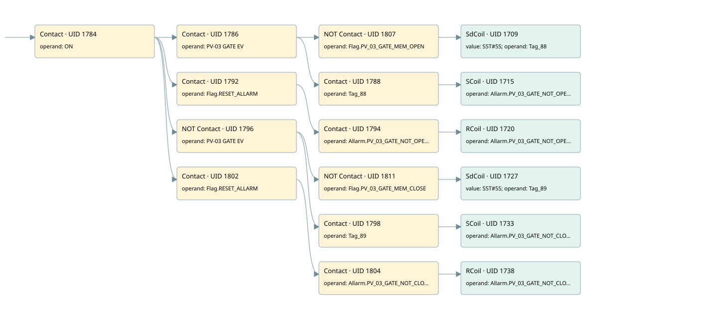

pv03
allarms 1 · 검색 색인 순서 39 · 원본 내부 NID 추정 46
백업 PLF 원본의 3070646 바이트 위치에서 복원한 XML. 검색 문서 1819의 객체 키 161022007962000000000000와 연결했다. 이름 해석 19/19개. 남은 RefId는 상수 또는 미해석 참조다.
연결 구조 다시 그리기
원본 Part/PCon/Wire를 이용한 연결도다. TIA 화면의 래더 배치 또는 실행 결과를 재현한 그림은 아니다. 핀 연결은 아래 표와 원본 XML을 기준으로 읽는다. 노드 위에 마우스를 두면 피연산자 이름을 볼 수 있다.

접점·코일·블록과 피연산자
| Part UID | Gate | Negated 핀 | 연결 피연산자 |
|---|---|---|---|
| 1784 | Contact | operand = ON | |
| 1786 | Contact | operand = PV-03 GATE EV | |
| 1807 | Contact | operand | operand = Flag.PV_03_GATE_MEM_OPEN |
| 1709 | SdCoil | value = S5T#5S; operand = Tag_88 | |
| 1788 | Contact | operand = Tag_88 | |
| 1715 | SCoil | operand = Allarm.PV_03_GATE_NOT_OPEN1 | |
| 1792 | Contact | operand = Flag.RESET_ALLARM | |
| 1794 | Contact | operand = Allarm.PV_03_GATE_NOT_OPEN1 | |
| 1720 | RCoil | operand = Allarm.PV_03_GATE_NOT_OPEN1 | |
| 1796 | Contact | operand | operand = PV-03 GATE EV |
| 1811 | Contact | operand | operand = Flag.PV_03_GATE_MEM_CLOSE |
| 1727 | SdCoil | value = S5T#5S; operand = Tag_89 | |
| 1798 | Contact | operand = Tag_89 | |
| 1733 | SCoil | operand = Allarm.PV_03_GATE_NOT_CLOSE1 | |
| 1802 | Contact | operand = Flag.RESET_ALLARM | |
| 1804 | Contact | operand = Allarm.PV_03_GATE_NOT_CLOSE1 | |
| 1738 | RCoil | operand = Allarm.PV_03_GATE_NOT_CLOSE1 |
접점 경로를 펼친 조건식
Contact·O/A·비교기의 원본 연결을 읽기 쉽게 펼친 보조 해석이다. POWER는 전원 레일 시작을 뜻한다. 호출 블록·에지·타이머의 내부 동작과 다중 쓰기 순서는 이 표로 실행 검증하지 않았다. 미해석 핀과 RefId는 원문 연결표에서 확인한다.
| UID | 동작 | 대상 | 원본 접점 경로 | 내용 |
|---|---|---|---|---|
| 1709 | SdCoil | Tag_88 | ((ON AND PV-03 GATE EV) AND NOT [Flag.PV_03_GATE_MEM_OPEN]) | 시간 동작 SdCoil; 타이머 의미 추가 확인 / 시간 인자 S5T#5S |
| 1715 | SCoil | Allarm.PV_03_GATE_NOT_OPEN1 | ((ON AND PV-03 GATE EV) AND Tag_88) | 조건 성립 시 Set |
| 1720 | RCoil | Allarm.PV_03_GATE_NOT_OPEN1 | ((ON AND Flag.RESET_ALLARM) AND Allarm.PV_03_GATE_NOT_OPEN1) | 조건 성립 시 Reset |
| 1727 | SdCoil | Tag_89 | ((ON AND NOT [PV-03 GATE EV]) AND NOT [Flag.PV_03_GATE_MEM_CLOSE]) | 시간 동작 SdCoil; 타이머 의미 추가 확인 / 시간 인자 S5T#5S |
| 1733 | SCoil | Allarm.PV_03_GATE_NOT_CLOSE1 | ((ON AND NOT [PV-03 GATE EV]) AND Tag_89) | 조건 성립 시 Set |
| 1738 | RCoil | Allarm.PV_03_GATE_NOT_CLOSE1 | ((ON AND Flag.RESET_ALLARM) AND Allarm.PV_03_GATE_NOT_CLOSE1) | 조건 성립 시 Reset |
원본 배선 연결
| Wire UID | 동일 Wire 연결 끝점 |
|---|---|
| 1806 | Powerrail {} ↔ Part 1784.in |
| 1758 | ORef 1739 (ON) ↔ Part 1784.operand |
| 1785 | Part 1784.out ↔ Part 1786.in ↔ Part 1792.in ↔ Part 1796.in ↔ Part 1802.in |
| 1759 | ORef 1740 (PV-03 GATE EV) ↔ Part 1786.operand |
| 1787 | Part 1786.out ↔ Part 1807.in ↔ Part 1788.in |
| 1810 | ORef 1808 (Flag.PV_03_GATE_MEM_OPEN) ↔ Part 1807.operand |
| 21 | Part 1807.out ↔ Part 1709.in |
| 1760 | ORef 1741 (S5T#5S) ↔ Part 1709.value |
| 1761 | ORef 1742 (Tag_88) ↔ Part 1709.operand |
| 1762 | ORef 1743 (Tag_88) ↔ Part 1788.operand |
| 22 | Part 1788.out ↔ Part 1715.in |
| 1765 | ORef 1745 (Allarm.PV_03_GATE_NOT_OPEN1) ↔ Part 1715.operand |
| 1767 | ORef 1746 (Flag.RESET_ALLARM) ↔ Part 1792.operand |
| 1793 | Part 1792.out ↔ Part 1794.in |
| 1768 | ORef 1747 (Allarm.PV_03_GATE_NOT_OPEN1) ↔ Part 1794.operand |
| 1795 | Part 1794.out ↔ Part 1720.in |
| 1770 | ORef 1748 (Allarm.PV_03_GATE_NOT_OPEN1) ↔ Part 1720.operand |
| 1771 | ORef 1749 (PV-03 GATE EV) ↔ Part 1796.operand |
| 1797 | Part 1796.out ↔ Part 1811.in ↔ Part 1798.in |
| 1814 | ORef 1812 (Flag.PV_03_GATE_MEM_CLOSE) ↔ Part 1811.operand |
| 23 | Part 1811.out ↔ Part 1727.in |
| 1772 | ORef 1750 (S5T#5S) ↔ Part 1727.value |
| 1773 | ORef 1751 (Tag_89) ↔ Part 1727.operand |
| 1774 | ORef 1752 (Tag_89) ↔ Part 1798.operand |
| 24 | Part 1798.out ↔ Part 1733.in |
| 1777 | ORef 1754 (Allarm.PV_03_GATE_NOT_CLOSE1) ↔ Part 1733.operand |
| 1779 | ORef 1755 (Flag.RESET_ALLARM) ↔ Part 1802.operand |
| 1803 | Part 1802.out ↔ Part 1804.in |
| 1780 | ORef 1756 (Allarm.PV_03_GATE_NOT_CLOSE1) ↔ Part 1804.operand |
| 1805 | Part 1804.out ↔ Part 1738.in |
| 1782 | ORef 1757 (Allarm.PV_03_GATE_NOT_CLOSE1) ↔ Part 1738.operand |
식별자 해석 근거 19개
| ORef UID | RefId | 이름 | IdentXmlPart 파일 | 해석 방법 |
|---|---|---|---|---|
| 1739 | 1 | ON | 0658-IdentXmlPart.xml | UID/RID + search-text + NID agreement |
| 1740 | 170 | PV-03 GATE EV | 0658-IdentXmlPart.xml | UID/RID + search-text + NID agreement |
| 1808 | 172 | Flag.PV_03_GATE_MEM_OPEN | 0657-IdentXmlPart.xml | UID/RID + search-text + NID agreement |
| 1742 | 192 | Tag_88 | 0658-IdentXmlPart.xml | UID/RID + search-text + NID agreement |
| 1741 | 175 | S5T#5S | 0656-IdentXmlPart.xml | literal candidate: UID/RID/NID + nearby named declarations + search-text agreement |
| 1743 | 192 | Tag_88 | 0658-IdentXmlPart.xml | UID/RID + search-text + NID agreement |
| 1745 | 193 | Allarm.PV_03_GATE_NOT_OPEN1 | 0657-IdentXmlPart.xml | UID/RID + search-text + NID agreement |
| 1746 | 13 | Flag.RESET_ALLARM | 0657-IdentXmlPart.xml | UID/RID + search-text + NID agreement |
| 1747 | 193 | Allarm.PV_03_GATE_NOT_OPEN1 | 0657-IdentXmlPart.xml | UID/RID + search-text + NID agreement |
| 1748 | 193 | Allarm.PV_03_GATE_NOT_OPEN1 | 0657-IdentXmlPart.xml | UID/RID + search-text + NID agreement |
| 1749 | 170 | PV-03 GATE EV | 0658-IdentXmlPart.xml | UID/RID + search-text + NID agreement |
| 1812 | 174 | Flag.PV_03_GATE_MEM_CLOSE | 0657-IdentXmlPart.xml | UID/RID + search-text + NID agreement |
| 1751 | 194 | Tag_89 | 0658-IdentXmlPart.xml | UID/RID + search-text + NID agreement |
| 1750 | 175 | S5T#5S | 0656-IdentXmlPart.xml | literal candidate: UID/RID/NID + nearby named declarations + search-text agreement |
| 1752 | 194 | Tag_89 | 0658-IdentXmlPart.xml | UID/RID + search-text + NID agreement |
| 1754 | 195 | Allarm.PV_03_GATE_NOT_CLOSE1 | 0657-IdentXmlPart.xml | UID/RID + search-text + NID agreement |
| 1755 | 13 | Flag.RESET_ALLARM | 0657-IdentXmlPart.xml | UID/RID + search-text + NID agreement |
| 1756 | 195 | Allarm.PV_03_GATE_NOT_CLOSE1 | 0657-IdentXmlPart.xml | UID/RID + search-text + NID agreement |
| 1757 | 195 | Allarm.PV_03_GATE_NOT_CLOSE1 | 0657-IdentXmlPart.xml | UID/RID + search-text + NID agreement |
검색 코드 보조 자료
참조 명칭을 찾기 위한 자료이며 실행 순서나 AND/OR 관계는 위 연결표로 확인한다.
"on" "pv-03 gate ev" "flag".pv_03_gate_mem_open "tag_88" s5t#5s "flag".reset_allarm "allarm".pv_03_gate_not_open1 "allarm".pv_03_gate_not_open1 "pv-03 gate ev" "flag".pv_03_gate_mem_close "tag_89" s5t#5s "tag_89" "allarm".pv_03_gate_not_close1 "flag".reset_allarm "allarm".pv_03_gate_not_close1 "allarm".pv_03_gate_not_close1 "tag_88" "allarm".pv_03_gate_not_open1